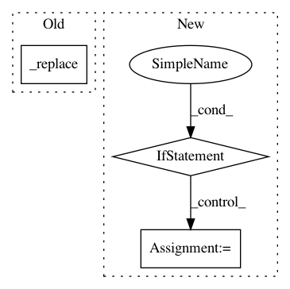

ec9dcf7491c38f3531bfa718b496861ab19bb048,tensorflow_transform/analyzer_nodes.py,_VocabularyAccumulatorCoder,encode_cache,#_VocabularyAccumulatorCoder#Any#,430
Before Change
// If the value is a _WeightedMeanAndVarAccumulator, cast each field to a
// list for serialization.
try:
value = value._replace(
count=value.count.tolist(),
mean=value.mean.tolist(),
variance=value.variance.tolist(),
weight=value.weight.tolist())
except AttributeError:
pass
accumulator = (token, value)
return tf.compat.as_bytes(
After Change
token = tf.compat.as_bytes(json.dumps(token))
// If the value is a _WeightedMeanAndVarAccumulator, cast each field to a
// list for serialization.
if isinstance(value, tuple):
value = [
a.tolist()
for a in (value.count, value.mean, value.variance, value.weight)
]
value = tf.compat.as_bytes(json.dumps(value))
len_token, len_value = len(token), len(value)
return struct.pack(
"{}{}s{}s".format(self._lengths_prefix_format, len_token, len_value),
In pattern: SUPERPATTERN
Frequency: 3
Non-data size: 3
Instances
Project Name: tensorflow/transform
Commit Name: ec9dcf7491c38f3531bfa718b496861ab19bb048
Time: 2019-08-28
Author: zoy@google.com
File Name: tensorflow_transform/analyzer_nodes.py
Class Name: _VocabularyAccumulatorCoder
Method Name: encode_cache
Project Name: tensorflow/tpu
Commit Name: f1a59064acffbb19c9880a17f542be66a3c8afd1
Time: 2020-02-24
Author: tanmingxing@google.com
File Name: models/official/efficientnet/efficientnet_model.py
Class Name: Model
Method Name: _build
Project Name: stanford-mast/nn_dataflow
Commit Name: 7b9de034f66722286b586d96e691fa72bc5c968e
Time: 2017-05-30
Author: mgao12@stanford.edu
File Name: nn_dataflow/LoopBlockingScheme.py
Class Name: LoopBlockingScheme
Method Name: verify_fetch